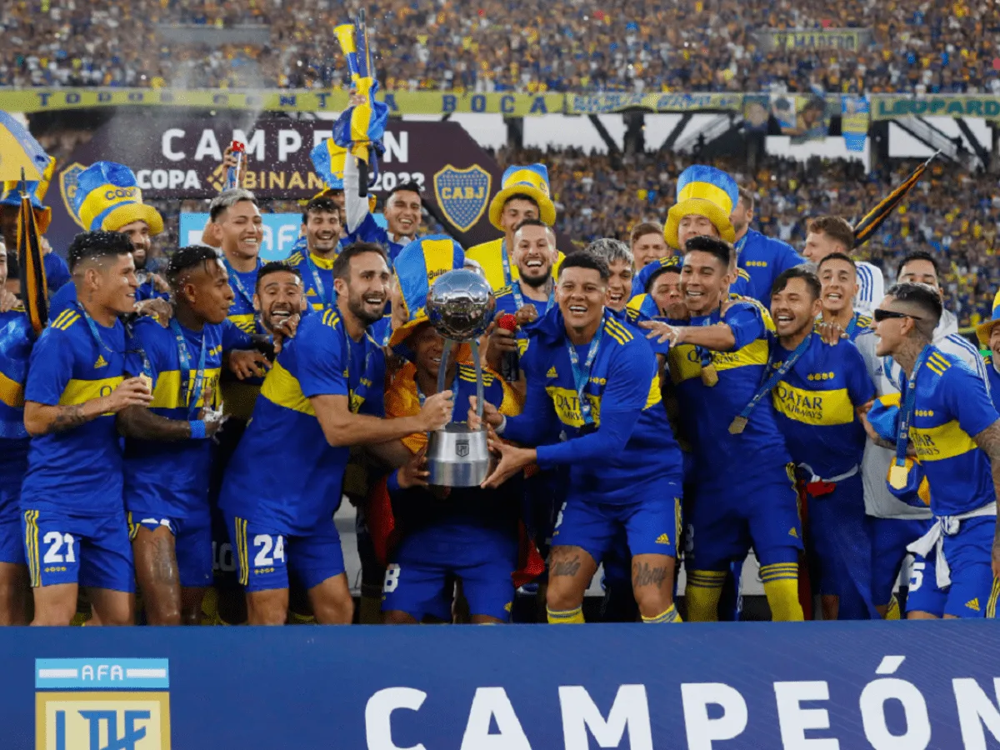
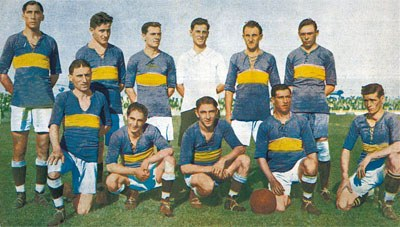

Hi! my name is Mia and you are going to learn about my favourite football team
Boca Juniors, in full Club Atlético Boca Juniors, Argentine professional football (soccer) club based in the Buenos Aires neighbourhood of Boca. Boca Juniors has proved to be one of Argentina’s most successful teams, especially in international club competitions. The club was founded in 1905 by a group of Italian immigrants in Argentina. It joined the Argentine Football Association League in 1913. Boca went through several jersey styles before settling on its distinctive blue shirt with a single yellow band across the chest in 1913. The club won the national amateur league championship six times before joining Argentina’s newly formed national professional league. In 1931 Boca was the first league champion in the professional era, and the team has since won the league title 25 additional times. Since 1940 Boca has played in Camilo Cichero Stadium, which was renamed Alberto J. Armando Stadium in 2000 in honour of a former club president. Fans know it as La Bombonera (“the Chocolate Box”) because of its unusual structure, with curving, steeply banked stands on three sides and one underdeveloped stand on the final side. The ground has a capacity of 49,000 spectators and is a noisy, intimidating venue when full. This is especially the case when it is visited by River Plate, Boca’s fiercest rival and the most successful club in Argentina. Matches between the two teams are known as the “Superclásico” and are usually sellouts that attract nationwide interest. Boca is a six-time winner of the Copa Libertadores, the top international competition between leading clubs from all over all South America, which began in 1960. Indeed, Boca is the last team to have won the Copa Libertadores without losing a single game, which it accomplished in 1978. In 2003 Boca beat Brazil’s Santos 2–0 and 3–1 in the home and away matches, respectively, to record the largest ever margin of victory (in terms of aggregate goal total) in a Copa Libertadores final. In addition, Boca has won the Intercontinental Cup (between the Copa Libertadores and European Cup/Champions League champions) three times, including noteworthy triumphs over Real Madrid in 2000 and AC Milan in 2003; the other victory came in 1977. Many world-famous players began their careers with Boca, including former Argentine captain Antonio Rattin and strikers Gabriel Batistuta, Claudio Caniggia, and Carlos Tevez. Diego Maradona had two spells at the club, at the start and end of his career, and this pattern has been followed by other players, including Juan Román Riquelme and Martín Palermo (who is the club’s all-time leading goal scorer).
